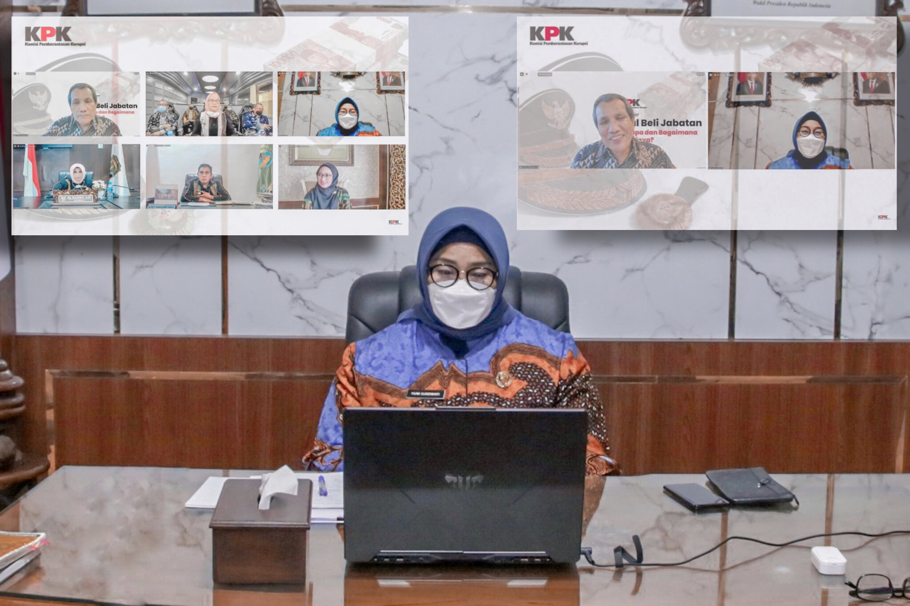

Berita Sragen - Bupati Yuni ke KPK : Masih Banyak Dari Kami Yang Tulus Dan Berintegrasi

SRAGEN - Bupati Sragen, dr. Kusdinar Untung Yuni Sukowati menjadi salah satu narasumber Webinar Komisi Pemberantasan Korupsi (KPK) Republik Indonesia dengan tema "Jual Beli Jabatan : Kenapa dan Bagaimana Solusinya?" Kamis, (16/9/2021).
Webinar ini dibuka oleh Menteri PAN-RB, Tjahjo Kumolo sebagai Keynote Speech bersama Ketua KPK, Firli Bahuri. Bertindak sebagai moderator Plt. Deputi Koordinasi dan Supervisi KPK, Pahala Nainggolan.
Sementara Bupati Yuni menjadi narasumber bersama Bupati Indramayu, Nina Agustina, Bupati Manggarai Barat, Edistasius Endi, Bupati Luwu Utara, Indrah Putri Indriani dan Walikota Tanjungpinang, Rahma.
Plt Deputi Koordinasi dan Supervisi Komisi Pemberantasan Korupsi (KPK), Pahala Nainggolan mengatakan webinar yang disiarkan langsung dari Kanal Youtube KPK itu menghadirkan narasumber terpilih mewakili 542 Kepala Daerah se-Indonesia yang dinilai tidak pernah melakukan jual beli jabatan.
"Terimakasih kepada lima narasumber yang kami rasa sangat berkompeten. Diinformasikan kepada masyarakat syukur-syukur dari lima ini kita bisa formulasikan solusinya," jelas Pahala.
Saat ditanya oleh moderator terkait jual beli jabatan, Bupati Yuni menegaskan bahwa menjadi pemimpin khususnya Kepala Daerah harus diniatkan untuk mengabdi kepada masyarakat, bangsa dan negara. Hal itu dianggap penting untuk mencegah kepala daerah dari tindakan korupsi, termasuk jual beli jabatan.
"Memang iya beberapa rekan kami Bupati/Walikota tertangkap karena suap jabatan, tapi perlu diingat ada 542 Bupati/Walikota di Indonesia dan saya yakin sebagian besar punya integritas serta ketulusan mengabdi untuk daerah dan masyarakatnya," ujarnya.
Sejak awal menjadi Bupati pada periode pertama (tahun 2016 - 2021) hingga periode kedua (2021-2026), Bupati Yuni komitmen akan selalu bersikap profesional karena niat utamanya adalah membangun Sragen dan SDM nya lebih baik lagi.
"Semuanya diawali dari niat pribadi bahwa memimpin daerah adalah untuk mengabdi kepada masyarakat bukan mencari kekayaan pribadi. Sampai hari ini, Alhamdulillah saya nyaman dengan teman-teman ASN Sragen karena mereka sudah tau bagaimana integritas dan kredibilitas saya," ungkap Bupati.
Bupati Yuni juga tidak menampik banyak yang melobby-nya untuk meminta jabatan di pemerintahan. Namun, Pihaknya menegaskan bahwa sebagai Bupati dirinya punya komitmen independen dalam mengambil sebuah keputusan. Termasuk saat melaksanakan lelang jabatan atau open bidding.
"Ada yang berani titip, saya coret. Akhirnya sekarang terbentuk sistem itu, tidak ada lagi ASN yang minta kedudukan jabatan," tegas Bupati.
Menurutnya, jika manajemen ASN dipedomani, praktik jual beli jabatan juga tidak akan terjadi.
"Sistem manajemen ASN memang penting, tapi sebagus apapun sistem nya pasti tidak bisa sempurna. Kunci utama dari menjadi pemimpin, dalam urusan apapun, terlebih manajemen ASN, adalah integritas dan komitmen pemimpin itu sendiri. Itulah yang akan menyempurnakan sistem," imbuhnya.
Sebagai tim pelaksana pengawas, dikatakan Bupati Yuni jika Inspektorat harus berperan optimal sebagai tim penilai maupun dalam seleksi JPT pratama.
"Sehingga dipastikan Inspektorat berperan. Kalau kami dari pimpinan memberikan contoh sikap integritas, profesional, akuntabel, dan transparan yang baik. Kami yakin kebawahpun tidak akan terjadi apa-apa. Karena dengan ketegasan dari pimpinan pasti akan menular dan menjalar kebawah," pungkasnya. (Miyos_Diskominfo)